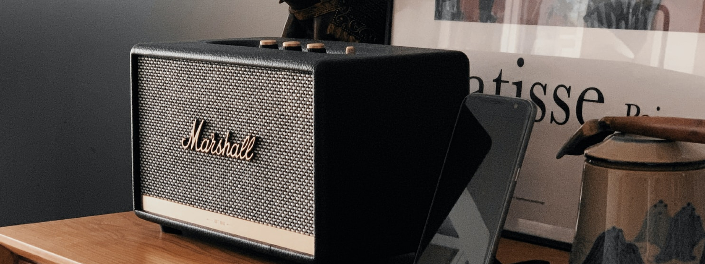

Наши любимые треки для тестирования Hi-Fi фурнитуры
Мы составили плейлист с нашими любимыми треками и рекомендациями для тестирования вашего Hi-Fi оборудования, включая песни, которые проверяют возможности вашей аппаратуры на полную мощность, а также мелодии, которые нам очень нравятся.
В Audioshells мы тестируем наши изделия из твердых пород дерева с множеством песен, охватывающих огромный диапазон музыкальных жанров, анализируя производительность на высоких и низких частотах, а также ритм и динамику. Это гарантирует, что каждый покупатель получит продукт высочайшего качества, изготовленный с высокой точностью — будь то Hi-Fi стойка, ТВ тумба, Виброизолирующая платформа — все они обеспечивают наилучшие акустические характеристики. Мы непредвзято тестируем каждый продукт, чтобы неизменно добиваться лучших результатов. Проверяя разнообразный плейлист, мы гарантируем, что удовлетворены будут людители совершенно разных музыкальных жанров, от ценителей классической музыки, металла до любителей поп-музыки и электроники!


Когда дело доходит до тестирования вашего Hi-Fi оборудования, наше предложение номер один — использовать песни, которые вам хорошо знакомы, чтобы вы могли распознать, где качество звучит кристально ясно в вашей настройке, а где нюансы упускаются. Нам также нравится, когда некоторые песни плохо записаны и спродюсированы, поскольку это часто указывает на слабость системы. Это может быть ваш любимый трек, но если он плохо записан, он будет ужасно звучать на хорошей системе, так как они будут обнажать бородавки и все такое. Однако, когда вы получаете хорошо отмастеренную, она может быть просто великолепной, и тогда начинается все самое интересное!
Мы составили плейлист с нашими рекомендациями и любимыми треками для тестирования вашего Hi-Fi оборудования, некоторые из мелодий, которые нам нравятся.
Также послушайте
- Bach: Mass in B minor — Kyrie I - Herreweghe
- Brian Eno — Ikebukuro
- The Kilimanjaro Darkjazz Ensemble — Cotard Delusion
- NRSB-11 - 685-471 2
- Resynthesis (3D Binaural Audio) by MaxCooper and Kevin McGloughlin
- Sickdisco - Aliens Eating People
Также послушайте
- Bach: Mass in B minor — Kyrie I - Herreweghe
- Brian Eno — Ikebukuro
- The Kilimanjaro Darkjazz Ensemble — Cotard Delusion
- NRSB-11 - 685-471 2
- Resynthesis (3D Binaural Audio) by MaxCooper and Kevin McGloughlin
- Sickdisco - Aliens Eating People
Если вы хотите взглянуть на наш полный плейлист, вы можете просмотреть его на YouTube или Spotify. Последний же плейлист прикреплен прямо внизу под этим текстом!
Моя самая любимая песня, которой нет в плейлисте, — это Imagine Джона Леннона. Это больше лирика, чем что-либо другое, но эй, вы можете сказать, что я мечтатель, но я не единственный.
Мастерство изготовления
Натуральный массив
Изготовленный из твердых 40-миллиметровых клепок из твердой древесины для каждого яруса, он обеспечивает жесткость и стабильность, такая плотность в стойке Hi-Fi позволяет поглощать вибрацию через оборудование.
Похожие новости
6 часов назад
Технологии шумоподавления
читать 7 минут
7 часов назад
Истории про звук
читать 12 минут


Оставайтесь на связи
Подпишитесь на нашу рассылку, чтобы получать новости о продуктах и обновлениях, отвечающих Вашим предпочтениям, а так же приглашения на эксклюзивные мероприятия